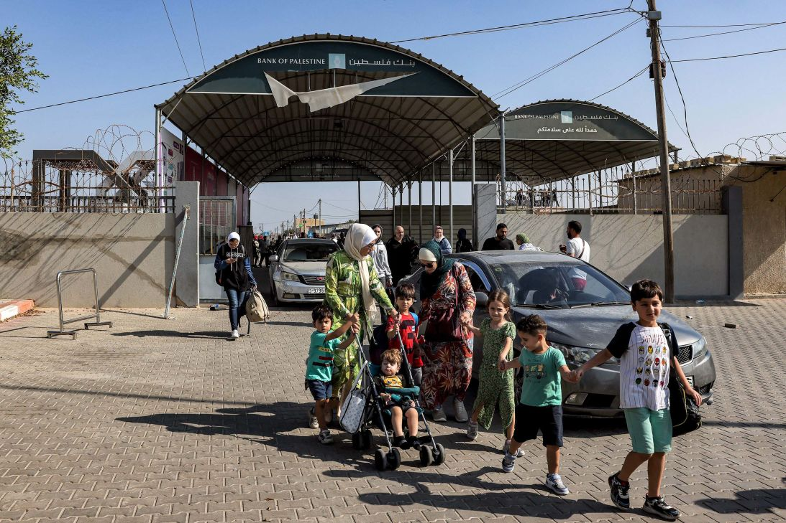
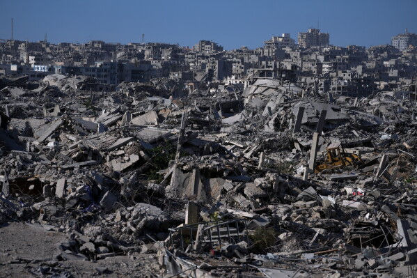
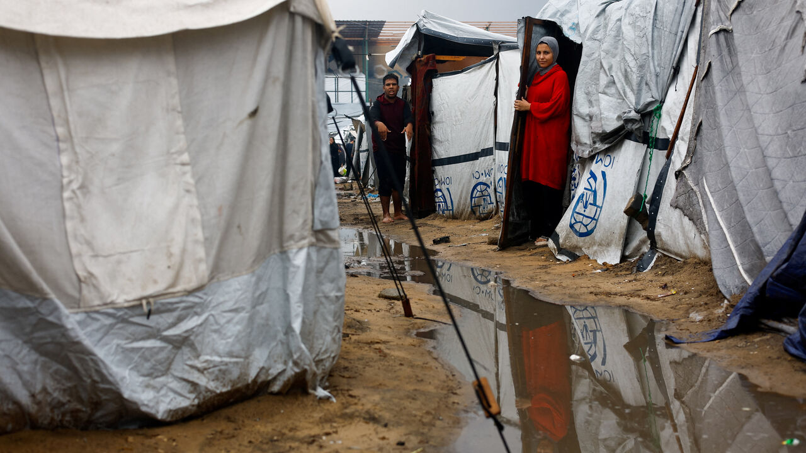

ফিলিস্তিন নামটি শুনলেই আজকের পৃথিবীর মানুষের চোখে ভেসে ওঠে যুদ্ধ, ধ্বংসস্তূপ, শরণার্থী শিবির আর কাঁদতে থাকা শিশুদের মুখ। কিন্তু এই ভূখণ্ডের ইতিহাস কেবল যুদ্ধের ইতিহাস নয়; এটি মানবসভ্যতার প্রথম যুগের কৃষি, লিখনপদ্ধতি, ধর্মের উত্থান, সাম্রাজ্যের আবির্ভাব ও পতন এবং আধুনিক জাতীয়তাবাদের এক দীর্ঘ, স্তরে স্তরে জমে থাকা ইতিহাস। ভূমধ্যসাগরের পূর্ব উপকূলের এই সরু ভূখণ্ড — যার আয়তন প্রায় ২৬,০০০–২৭,০০০ বর্গকিলোমিটার — তিন মহাদেশের সংযোগস্থলে অবস্থিত হওয়ায় প্রায় প্রতিটি বড় সাম্রাজ্যের পদচিহ্ন এখানে পড়েছে।
এই প্রবন্ধে প্রাচীন কানআনের নগর-রাজ্য থেকে শুরু করে রোমান শাসন, ইসলামি বিজয়, উসমানীয় যুগ, ব্রিটিশ ম্যান্ডেট, ১৯৪৮ সালের নাকবা, ১৯৬৭ সালের দখল, ইনতিফাদা, অসলো চুক্তি, গাজা যুদ্ধ এবং ২০২৬ সাল পর্যন্ত ঘটনাক্রম ধারাবাহিকভাবে আলোচনা করা হবে। ইতিহাস জানা মানে বর্তমানকে বোঝা; আর বর্তমান না বুঝে ভবিষ্যতের শান্তির পথ খুঁজে পাওয়া অসম্ভব।
প্রাচীন কানআন: “ফিলিস্তিন” নামের সূচনা
খ্রিস্টপূর্ব প্রায় ৩০০০ অব্দে এই অঞ্চলে যে সেমিটিক জনগোষ্ঠী বসতি স্থাপন করে, তাদের মধ্যে কানআনীয়রা ছিল সবচেয়ে উল্লেখযোগ্য। তারা কানআন নামে পরিচিত এই ভূখণ্ডে অসংখ্য নগর-রাজ্য গড়ে তোলে — যেমন হাসোর, মেগিদ্দো ও গাজার মতো গুরুত্বপূর্ণ বাণিজ্যকেন্দ্র। কানআনীয়রা মূলত কৃষি, বাণিজ্য ও ধাতুশিল্পে দক্ষ ছিল এবং তাদের নিজস্ব ধর্মীয় বিশ্বাস ও দেবদেবীর পূজা ছিল।
“ফিলিস্তিন” নামের উৎপত্তি নিয়ে একাধিক মত আছে। সবচেয়ে প্রচলিত মত অনুযায়ী, খ্রিস্টপূর্ব দ্বাদশ শতাব্দীতে ভূমধ্যসাগরের দ্বীপ ও উপকূলীয় অঞ্চল থেকে আসা “পেলেস্থ” বা “ফিলিস্তিনি” (Philistines / Peleset) জনগোষ্ঠীর নাম থেকে এই অঞ্চলের নাম এসেছে। মিশরীয় লিপিতে “পেলেসেট” নামে তাদের উল্লেখ পাওয়া যায়। ফিলিস্তিনিরা গাজার আশপাশে পাঁচটি নগর-রাজ্য গড়ে তোলে — গাজা, আশকেলন, আশদোদ, একরন ও গাথ। পরবর্তীতে রোমানরা এই অঞ্চলকে “সিরিয়া-প্যালেস্তিনা” নামে অভিহিত করে, আর এর থেকেই আরবি ভাষায় “ফিলিস্তিন” নামটি এসেছে।

খ্রিস্টপূর্ব ১৪০০ অব্দের দিকে এই অঞ্চলটি মিশরীয় সাম্রাজ্যের অধীনে আসে। এরপর খ্রিস্টপূর্ব ১২০০ সালের পর ফিলিস্তিনিরা ও ইসরায়েলীয়রা এই অঞ্চলে ক্ষমতা প্রতিষ্ঠা করে। কানআনের নগর-রাজ্যগুলো দীর্ঘদিন ধরে মিশর, হিট্টাইট ও মেসোপটেমিয়ার সাম্রাজ্যগুলোর মধ্যে বাণিজ্যিক ও সামরিক প্রতিযোগিতার কেন্দ্রবিন্দু হয়ে থাকে।
ইসরায়েল ও যিহূদা রাজ্য
খ্রিস্টপূর্ব ১০২০ অব্দের দিকে ইসরায়েলীয়রা এই অঞ্চলে একটি কেন্দ্রীভূত রাজ্য প্রতিষ্ঠা করে, যার প্রথম রাজা ছিলেন শাউল। এরপর দাউদ (আ.) জেরুজালেমকে রাজধানী বানান এবং তাঁর পুত্র সুলাইমান (আ.) প্রথম মন্দির নির্মাণ করেন বলে বাইবেলের বর্ণনায় উল্লেখ আছে। খ্রিস্টপূর্ব ৯২৬ অব্দের দিকে এই রাজ্যটি দুটি ভাগে বিভক্ত হয় — উত্তরে ইসরায়েল রাজ্য ও দক্ষিণে যিহূদা রাজ্য। উত্তরের ইসরায়েল রাজ্যটি খ্রিস্টপূর্ব ৭২২ সালে অ্যাসিরীয়দের হাতে এবং দক্ষিণের যিহূদা রাজ্যটি খ্রিস্টপূর্ব ৫৮৬ সালে ব্যাবিলনীয়দের হাতে ধ্বংস হয়।
ব্যাবিলনীয়রা জেরুজালেমের প্রথম মন্দির ধ্বংস করে এবং ইহুদিদের একটি বড় অংশকে ব্যাবিলনে নির্বাসনে পাঠায়। এই নির্বাসনকে ইহুদি ইতিহাসে “ব্যাবিলনীয় নির্বাসন” বলা হয়, যা পরবর্তীতে ইহুদি ধর্মীয় পরিচয় ও তাওরাত সংকলনের জন্য অত্যন্ত গুরুত্বপূর্ণ হয়ে ওঠে।
পারসিক, গ্রিক ও রোমান শাসন
খ্রিস্টপূর্ব ৫৩৯ সালে পারসিক সম্রাট কুরুশ (সাইরাস) ব্যাবিলন জয় করেন এবং ইহুদিদের জেরুজালেমে ফিরে মন্দির পুনর্নির্মাণের অনুমতি দেন। এরপর খ্রিস্টপূর্ব ৩৩২ সালে আলেকজান্ডার দ্য গ্রেট এই অঞ্চল জয় করেন। আলেকজান্ডারের মৃত্যুর পর এই অঞ্চলটি টলেমি ও সেলিউসিড সাম্রাজ্যের মধ্যে হাতবদল হতে থাকে। খ্রিস্টপূর্ব ১৬৮ সালে সেলিউসিড শাসক আন্তিয়খাস চতুর্থ এপিফেনেস জেরুজালেমের মন্দিরে জিউসের মূর্তি স্থাপন করলে মাক্কাবীয় বিদ্রোহ শুরু হয় এবং খ্রিস্টপূর্ব ১৪০ অব্দের দিকে হাসমোনীয় (মাক্কাবীয়) রাজবংশ প্রতিষ্ঠিত হয়।
খ্রিস্টপূর্ব ৬৩ সালে রোমান সেনাপতি পম্পে জেরুজালেম দখল করেন এবং এই অঞ্চল রোমান সাম্রাজ্যের অধীনে চলে আসে। রোমানরা এই অঞ্চলে হেরোদ নামে একজন ক্লায়েন্ট রাজা নিয়োগ করে, যিনি জেরুজালেমের দ্বিতীয় মন্দিরের বিশাল সংস্কার করেন। খ্রিস্টীয় প্রথম শতকে ইহুদি-রোমান সংঘাত তীব্র হয়; ৭০ সালে রোমানরা জেরুজালেম ও দ্বিতীয় মন্দির সম্পূর্ণ ধ্বংস করে এবং ১৩৫ সালে বার-কোখবা বিদ্রোহ দমন করার পর ইহুদিদের জেরুজালেম থেকে নির্বাসিত করা হয়।
রোমান সাম্রাজ্যের পতনের পর এই অঞ্চল বাইজেন্টাইন (পূর্ব রোমান) সাম্রাজ্যের অধীনে আসে। ৬১৪ সালে পারসিক সাসানীয়রা জেরুজালেম দখল করে, তবে ৬২৮ সালে বাইজেন্টাইন সম্রাট হেরাক্লিয়াস তা পুনরুদ্ধার করেন।
ইসলামি বিজয় ও মধ্যযুগ
৬৩৬-৬৩৭ সালে ইসলামি খিলাফতের সেনাবাহিনী ইয়ারমুকের যুদ্ধে বাইজেন্টাইনদের পরাজিত করে এবং এই ভূখণ্ড মুসলিমদের হাতে আসে। দ্বিতীয় খলিফা উমর ইবনুল খাত্তাব (রা.) জেরুজালেম সফর করেন এবং খ্রিস্টানদের ধর্মীয় স্থান ও উপাসনার স্বাধীনতা নিশ্চিত করেন। এই সময় জেরুজালেমে আল-আকসা মসজিদ নির্মাণের সূচনা হয়, যা পরবর্তীতে উমাইয়া খলিফা আব্দুল মালিক ইবন মারওয়ানের সময়ে কুব্বাত আস-সাখরা (ডোম অব দ্য রক) ও আল-আকসা মসজিদের বর্তমান কাঠামো লাভ করে।

উমাইয়া, আব্বাসীয় ও ফাতিমীয় খিলাফতের সময় ফিলিস্তিন ইসলামি সংস্কৃতি, শিক্ষা ও বাণিজ্যের একটি গুরুত্বপূর্ণ কেন্দ্র হয়ে ওঠে। রামলা, নাবলুস ও গাজার মতো শহরগুলো বড় হয়; পর্যটক ও পণ্ডিতরা এই অঞ্চলে আসেন। কিন্তু ১০৯৯ সালে ইউরোপীয় ক্রুসেডাররা জেরুজালেম দখল করে এবং এক ভয়াবহ গণহত্যা চালায়; এরপর প্রায় দুই শতাব্দী ধরে ক্রুসেডার ও মুসলিম শাসকদের মধ্যে সংঘাত চলতে থাকে। ১১৮৭ সালে সুলতান সালাহউদ্দিন আইয়ুবী হিত্তিনের যুদ্ধে ক্রুসেডারদের পরাজিত করে জেরুজালেম পুনরুদ্ধার করেন।
সালাহউদ্দিনের পর আইয়ুবীয় ও মামলুক শাসন এবং মঙ্গোল আক্রমণের মধ্য দিয়ে এই অঞ্চলের শাসনব্যবস্থা বারবার বদলায়। ১২৫০ সালে মামলুকরা ক্ষমতা দখল করে এবং প্রায় তিন শতাব্দী শাসন করে। মামলুক আমলে জেরুজালেম ও হেবরন ইসলামি শিক্ষা ও তীর্থস্থান হিসেবে বিশেষ মর্যাদা পায়।
১৫১৬-১৭ সালে সুলতান সেলিম প্রথম এই অঞ্চল জয় করেন এবং ফিলিস্তিন প্রায় চার শতাব্দী ধরে (১৯১৭ সাল পর্যন্ত) উসমানীয় সাম্রাজ্যের অধীনে থাকে। উসমানীয় যুগে জেরুজালেম ও আশপাশের অঞ্চল একটি আলাদা প্রশাসনিক একক হিসেবে পরিচালিত হতো এবং মসজিদুল আকসা প্রাঙ্গণকে কেন্দ্র করে ইসলামি স্থাপত্য ও ওয়াক্ফ ব্যবস্থা সংহত হয়। এই দীর্ঘ সময় সম্পূর্ণ বিনা দ্বন্দ্বের ছিল না — ১৮৩৪ সালে পশ্চিম তীরে ভূমি ও করবিষয়ে এক বড় কৃষক বিদ্রোহ সংঘটিত হয়, যা উসমানীয় শাসনের বিরুদ্ধে তীব্র প্রতিরোধ তৈরি করে।
ইহুদি অভিবাসন ও ব্রিটিশ ম্যান্ডেট
ঊনবিংশ শতাব্দীর শেষভাগে ইউরোপে ইহুদিবিদ্বেষ ও জায়নিস্ট আন্দোলনের উত্থান ফিলিস্তিনে ইহুদি অভিবাসনকে ত্বরান্বিত করে। ১৮৯৭ সালে সুইজারল্যান্ডের বাজেলে প্রথম জায়নিস্ট কংগ্রেস অনুষ্ঠিত হয় এবং থিওডর হের্জল ফিলিস্তিনে একটি ইহুদি রাষ্ট্র গঠনের লক্ষ্য ঘোষণা করেন।
১৯১৭ সালের ২ নভেম্বর ব্রিটিশ পররাষ্ট্রমন্ত্রী আর্থার বালফুর এক চিঠিতে “ইহুদি জাতীয় আবাসভূমি” প্রতিষ্ঠার সমর্থন জানান, যা ইতিহাসে বালফুর ঘোষণা নামে পরিচিত। এরপর ১৯১৮ সালে ব্রিটিশ ও আরব বাহিনী উসমানীয়দের পরাজিত করে জেরুজালেম দখল করে। ১৯২০ সালে লিগ অব নেশনস ব্রিটেনকে ফিলিস্তিনের ম্যান্ডেট প্রদান করে, যা ১৯২৩ সালের ২৯ সেপ্টেম্বর কার্যকর হয়।
ম্যান্ডেট আমলে ইহুদি অভিবাসন বৃদ্ধি পায় এবং আরব-ইহুদি সংঘাত তীব্র হয়। ১৯২৯ সালের হেবরন দাঙ্গা, ১৯৩৬-৩৯ সালের আরব বিদ্রোহ এবং ১৯৪৭ সালের গৃহযুদ্ধ ছিল এই সংঘাতের প্রধান ধারা। ১৯৩৯ সালের ব্রিটিশ শ্বেতপত্র (White Paper) ইহুদি অভিবাসন সীমিত করে, তবে দ্বিতীয় বিশ্বযুদ্ধ ও হলোকাস্টের পর ইহুদি শরণার্থীরা ফিলিস্তিনে আসতে থাকে।
১৯৪৭ সালের বিভাজন পরিকল্পনা
১৯৪৭ সালের ২৯ নভেম্বর জাতিসংঘ সাধারণ পরিষদ ১৮১ নম্বর প্রস্তাব (UN Resolution 181) পাশ করে, যা ফিলিস্তিনকে একটি ইহুদি রাষ্ট্র ও একটি আরব রাষ্ট্রে ভাগ করার পরিকল্পনা করে; জেরুজালেম ও বেথলেহেমকে রাখা হয় আন্তর্জাতিক নিয়ন্ত্রণে। ভোটাভুটিতে ৩৩টি রাষ্ট্র পক্ষে, ১৩টি বিপক্ষে ভোট দেয় এবং ১০টি বিরত থাকে। ইহুদি নেতৃত্ব এই প্রস্তাব গ্রহণ করেন, কিন্তু আরব নেতৃত্ব তা প্রত্যাখ্যান করেন।
প্রস্তাব অনুযায়ী ইহুদি রাষ্ট্র পেত মোট ভূখণ্ডের প্রায় ৫৬ শতাংশ, আরব রাষ্ট্র পেত প্রায় ৪৩ শতাংশ এবং জেরুজালেম-বেথলেহেমসহ বাকি প্রায় ১ শতাংশ থাকার কথা ছিল আন্তর্জাতিক নিয়ন্ত্রণে। ওই সময়ে জমির মালিকানা ও জনসংখ্যার দিক থেকে অসম এই বিভাজন আরবদের কাছে অগ্রহণযোগ্য ছিল।
১৯৪৮ সালের নাকবা ও শরণার্থীদের জন্ম
১৯৪৮ সালের ১৪ মে ব্রিটিশ ম্যান্ডেট শেষ হয় এবং সেদিনই ডেভিড বেন-গুরিয়ন ইসরায়েল রাষ্ট্রের স্বাধীনতা ঘোষণা করেন। পরদিন থেকে আরব-ইসরায়েল যুদ্ধ শুরু হয়। এই যুদ্ধে প্রায় সাত লাখ ফিলিস্তিনি নিজ বাড়িঘর ছেড়ে শরণার্থী হয়ে যান — এই ঘটনা ফিলিস্তিনি ইতিহাসে “নাকবা” বা বিপর্যয় নামে পরিচিত।
যুদ্ধের সময় চার শতাধিকের বেশি ফিলিস্তিনি গ্রাম ও নগরী উজাড় করা হয়। যুদ্ধ শেষে গাজা মিশরের নিয়ন্ত্রণে এবং পশ্চিম তীর ও পূর্ব জেরুজালেম জর্ডানের নিয়ন্ত্রণে যায়। ১৯৪৯ সালের ৮ ডিসেম্বর জাতিসংঘ সাধারণ পরিষদের ৩০২ (IV) নম্বর প্রস্তাবের মাধ্যমে UNRWA (UN Relief and Works Agency) প্রতিষ্ঠিত হয়, যা ১৯৫০ সালের মে মাসে কাজ শুরু করে। ১৯৪৯ সালে জাতিসংঘ ফিলিস্তিনকে স্বাধীন রাষ্ট্র হিসেবে স্বীকৃতি দেয়নি; PLO জাতিসংঘে পর্যবেক্ষক মর্যাদা পায় ১৯৭৪ সালে।

১৯৬৪ সালে ফিলিস্তিনি মুক্তিসংগ্রামী সংগঠন PLO (Palestine Liberation Organization) প্রতিষ্ঠিত হয় এবং ১৯৬৯ সালে ইয়াসির আরাফাত তার নেতৃত্ব নেন।
১৯৫৬ সালের সুয়েজ সংকট ও গাজা
১৯৫৬ সালে মিশরের প্রেসিডেন্ট গামাল আব্দুন নাসের সুয়েজ খাল জাতীয়করণ করলে ব্রিটেন, ফ্রান্স ও ইসরায়েল মিশর আক্রমণ করে। এই যুদ্ধের সময় ইসরায়েল গাজা দখল করে এবং খান ইউনুস ও রাফাহ এলাকায় ভয়াবহ হতাহতের ঘটনা ঘটে। জাতিসংঘের চাপে ইসরায়েল গাজা থেকে সরে আসে এবং UNEF শান্তিরক্ষী বাহিনী গাজায় মোতায়েন হয়।
১৯৬৭ সালের ছয় দিনের যুদ্ধ ও দখল
১৯৬৭ সালের ৫ জুন ইসরায়েল মিশর, সিরিয়া ও জর্ডানের বিরুদ্ধে যুদ্ধ শুরু করে; ছয় দিনের মধ্যে গাজা, পশ্চিম তীর, পূর্ব জেরুজালেম, সিনাই ও গোলান মালভূমি দখল করে। এই যুদ্ধের ফলে প্রায় তিন লাখের বেশি ফিলিস্তিনি বাস্তুচ্যুত হন। জাতিসংঘ নিরাপত্তা পরিষদ ২৪২ নম্বর প্রস্তাব পাশ করে, যেখানে “ভূমির বিনিময়ে শান্তি” নীতির কথা বলা হয়।
১৯৬৭ সালের পর ইসরায়েল দখলকৃত পশ্চিম তীর ও গাজায় ইহুদি বসতি স্থাপন শুরু করে, যা আন্তর্জাতিক আইনে অবৈধ ঘোষণা করা হয়। ১৯৮৭ সালের ডিসেম্বরে গাজার জাবালিয়া শিবির থেকে প্রথম ইনতিফাদা শুরু হয় — দখল ও দমননীতির বিরুদ্ধে পাথর, ধর্মঘট ও গণবিক্ষোভের মাধ্যমে এক দীর্ঘ গণ-অভ্যুত্থান, যা ১৯৯৩ সাল পর্যন্ত চলে।

১৯৭০-এর দশক: কালো সেপ্টেম্বর, লেবানন ও ক্যাম্প ডেভিড
১৯৭০ সালে জর্ডানে PLO-এর উপস্থিতি নিয়ে সংঘাত সৃষ্টি হয়; ইতিহাসে এটি “কালো সেপ্টেম্বর” নামে পরিচিত। PLO লেবাননে সরে যায় এবং সেখান থেকে ইসরায়েলের বিরুদ্ধে অভিযান চালায়। ১৯৭৮ সালে ইসরায়েল দক্ষিণ লেবানন আক্রমণ করে।
১৯৭৮ সালে ক্যাম্প ডেভিড চুক্তি স্বাক্ষরিত হয়, যেখানে ইসরায়েল ও মিশরের মধ্যে শান্তি প্রতিষ্ঠিত হয় এবং সিনাই মিশরকে ফিরিয়ে দেওয়া হয়, তবে গাজা ও পশ্চিম তীরের ভবিষ্যৎ নিয়ে স্পষ্ট কিছু বলা হয়নি। ১৯৭৯ সালে ইসরায়েল ও মিশর আনুষ্ঠানিকভাবে শান্তি চুক্তি করে।
১৯৮২ সালের লেবানন যুদ্ধ ও সাবরা-শাতিলা
১৯৮২ সালে ইসরায়েল লেবানন আক্রমণ করে এবং বৈরুত অবরোধ করে। এই যুদ্ধের সময় ১৬-১৮ সেপ্টেম্বর ফালাঙ্গিস্ট মিলিশিয়ারা ইসরায়েলি বাহিনীর নিয়ন্ত্রিত এলাকার ভেতরে বৈরুতের সাবরা ও শাতিলা শরণার্থী শিবিরে ব্যাপক গণহত্যা চালায়, যেখানে প্রায় ৭০০ থেকে ৩,৫০০ ফিলিস্তিনি ও লেবানিজ নিহত হন। ইসরায়েলি তদন্ত কমিশন (কাহান কমিশন) এই ঘটনায় ইসরায়েলি বাহিনীর পরোক্ষ দায় স্বীকার করে এবং প্রতিরক্ষামন্ত্রী আরিয়েল শ্যারনকে দায়িত্ব থেকে সরানো হয়।
১৯৮৮-১৯৯৩: রাষ্ট্র ঘোষণা থেকে অসলো চুক্তি
১৯৮৮ সালের ১৫ নভেম্বর PLO-র নেতৃত্বে আলজিয়ার্সে ফিলিস্তিনের স্বাধীনতা ঘোষণা করা হয় এবং PLO ইসরায়েলের অস্তিত্ব স্বীকার করে নেয়। ১৯৯১ সালে মাদ্রিদ সম্মেলন এবং ১৯৯৩ সালে অসলো চুক্তির মাধ্যমে ইসরায়েল ও PLO পারস্পরিক স্বীকৃতি দেয়।
অসলো চুক্তিতে একটি পাঁচ বছরের অন্তর্বর্তীকালীন সময়ে পশ্চিম তীর ও গাজায় ফিলিস্তিনি স্বায়ত্তশাসন প্রতিষ্ঠার কথা বলা হয়; কিন্তু এই চুক্তি চূড়ান্ত মর্যাদা, জেরুজালেম, শরণার্থী ও বসতির মতো মূল বিষয়গুলো অমীমাংসিত রেখে দেয়। ১৯৯৪ সালে গাজা-জেরিকো চুক্তি এবং ১৯৯৫ সালে অসলো-II চুক্তি স্বাক্ষরিত হয়। ১৯৯৪ সালে ইয়াসির আরাফাত গাজায় ফিরে আসেন এবং ফিলিস্তিনি জাতীয় কর্তৃপক্ষ (PA) গঠিত হয়।
দ্বিতীয় ইনতিফাদা (২০০০-২০০৫)
২০০০ সালে ইসরায়েলি বিরোধী নেতা আরিয়েল শ্যারনের আল-আকসা প্রাঙ্গণ পরিদর্শনকে কেন্দ্র করে দ্বিতীয় ইনতিফাদা শুরু হয়। এই ইনতিফাদায় আত্মঘাতী হামলা ও ইসরায়েলি সামরিক অভিযান উভয়ই তীব্র হয়। ইসরায়েল পশ্চিম তীরে বিচ্ছিন্নতাবাদী দেয়াল ও সীমানা নির্মাণ শুরু করে, যা আন্তর্জাতিক আদালত (ICJ) ২০০৪ সালে আন্তর্জাতিক আইনের পরিপন্থী ঘোষণা করে। ২০০৪ সালে হামাস নেতা শেখ আহমেদ ইয়াসিন ইসরায়েলি হামলায় নিহত হন এবং একই বছর ইয়াসির আরাফাত মৃত্যুবরণ করেন।
২০০৫ সালে ইসরায়েল গাজা থেকে একতরফাভাবে সৈন্য ও বসতি প্রত্যাহার করে, তবে গাজার সীমান্ত, আকাশ ও সমুদ্রের নিয়ন্ত্রণ ইসরায়েলের হাতেই থাকে। এর ফলে গাজা কার্যত একটি অবরুদ্ধ এলাকায় পরিণত হয়।
গাজার শাসনভার, অবরোধ ও ২০০৮-০৯ যুদ্ধ
২০০৬ সালে হামাস ফিলিস্তিনি আইন পরিষদের নির্বাচনে বিজয়ী হয়; এরপর ২০০৭ সালে হামাস ও ফাতাহর মধ্যে সংঘাতের পর হামাস গাজার নিয়ন্ত্রণ নেয় এবং ইসরায়েল গাজায় কঠোর অবরোধ আরোপ করে। ২০০৮ সালের ডিসেম্বর থেকে ২০০৯ সালের জানুয়ারি পর্যন্ত ইসরায়েলের “অপারেশন কাস্ট লিড” অভিযানে প্রায় ১,৪০০ ফিলিস্তিনি নিহত হন, যাদের মধ্যে বেশিরভাগ বেসামরিক।
২০১২, ২০১৪ ও ২০২১ সালের গাজা যুদ্ধ
২০১২ সালের নভেম্বরে “অপারেশন পিলার অব ডিফেন্স” অভিযানে প্রায় ১৭০ ফিলিস্তিনি নিহত হন। ২০১৪ সালের জুলাই-আগস্টে “অপারেশন প্রোটেকটিভ এজ” অভিযানে প্রায় ২,২০০ ফিলিস্তিনি নিহত হন, যাদের বেশিরভাগ বেসামরিক এবং প্রায় ৫০০ শিশু। ২০২১ সালের মে মাসে ১১ দিনের যুদ্ধে প্রায় ২৫০ ফিলিস্তিনি নিহত হন। প্রতিটি যুদ্ধের পর পুনর্নির্মাণের প্রতিশ্রুতি দেওয়া হলেও গাজার অবকাঠামো ও অর্থনীতি বারবার ধ্বংস হয়।
২০১২: জাতিসংঘে “অসদস্য পর্যবেক্ষক রাষ্ট্র” মর্যাদা
২০১২ সালের ২৯ নভেম্বর জাতিসংঘ সাধারণ পরিষদ ৬৭/১৯ নম্বর প্রস্তাব পাশ করে ফিলিস্তিনকে “অসদস্য পর্যবেক্ষক রাষ্ট্র” (Non-member Observer State) মর্যাদা দেয়। এই সিদ্ধান্তের পক্ষে ১৩৮টি রাষ্ট্র ভোট দেয়, বিপক্ষে ৯টি এবং ৪১টি ভোটদান থেকে বিরত থাকে।
২০১৫-২০১৮: আন্তর্জাতিক অপরাধ আদালত ও জেনেভা
২০১৫ সালের ২ জানুয়ারি ফিলিস্তিন আন্তর্জাতিক অপরাধ আদালতের (ICC) রোম সংবিধিতে যোগদানের দলিল জমা দেয়, এবং ১ এপ্রিল ২০১৫ তা কার্যকর হয়। এর ফলে ICC ফিলিস্তিনের ভূখণ্ডে সংঘটিত যুদ্ধাপরাধ ও মানবতাবিরোধী অপরাধ তদন্তের এখতিয়ার পায়। ২০২১ সালে ICC-এর প্রাক-বিচার কক্ষ ফিলিস্তিনের ভূখণ্ডে এখতিয়ার বহাল রাখে।
২০১৮ সালের মে মাসে গাজার সীমান্তে “মার্চ অব রিটার্ন” বিক্ষোভে ইসরায়েলি বাহিনীর গুলিতে শতাধিক ফিলিস্তিনি নিহত হন এবং হাজারো আহত হন। একই বছর মার্কিন যুক্তরাষ্ট্র জেরুজালেমকে ইসরায়েলের রাজধানী হিসেবে স্বীকৃতি দিয়ে দূতাবাস স্থানান্তর করে।
২০২৩ সালের ৭ অক্টোবর হামলা ও গাজা যুদ্ধ
২০২৩ সালের ৭ অক্টোবর হামাস ও অন্যান্য ফিলিস্তিনি সশস্ত্র গোষ্ঠী ইসরায়েলের দক্ষিণাঞ্চলে ব্যাপক হামলা চালায়। ইসরায়েলি সরকারের তথ্য অনুযায়ী এই হামলায় ১,২০০-এর বেশি মানুষ নিহত হন, যাদের মধ্যে অন্তত ৮০৯ জন বেসামরিক; আর ২৫২ জনকে জিম্মি করে গাজায় নিয়ে যাওয়া হয়। এই হামলাকে ইসরায়েল ইতিহাসের সবচেয়ে ভয়াবহ সন্ত্রাসী হামলা হিসেবে অভিহিত করে এবং গাজায় ব্যাপক সামরিক অভিযান শুরু করে।
জাতিসংঘের মানবাধিকার বিষয়ক কমিশন অব ইনকোয়ারি (COI) ২০২৪ সালের জুনে প্রকাশিত প্রতিবেদনে উল্লেখ করে যে উভয় পক্ষই যুদ্ধাপরাধ করেছে; পাশাপাশি ইসরায়েল গাজায় মানবতাবিরোধী অপরাধ করেছে বলেও প্রতিবেদনে বলা হয়। ২০২৫ সালের সেপ্টেম্বরে প্রকাশিত আরেকটি প্রতিবেদনে COI গাজায় গণহত্যার নজির খুঁজে পায়।

২০২৩ সালের নভেম্বরে এক সপ্তাহের যুদ্ধবিরতিতে ১০৫ জন ইসরায়েলি জিম্মিকে মুক্তি দেওয়া হয়। ২০২৪ সালের জানুয়ারিতে আন্তর্জাতিক আদালত (ICJ) দক্ষিণ আফ্রিকার অভিযোগের ভিত্তিতে শুনানি করে এবং ২৬ জানুয়ারি অন্তর্বর্তী আদেশে ইসরায়েলকে গাজায় গণহত্যা প্রতিরোধে সব ধরনের ব্যবস্থা নেওয়ার নির্দেশ দেয়।
২০২৪-২০২৫: আঞ্চলিক সংঘাত ও লেবানন যুদ্ধ
২০২৪ সালের জুলাইয়ে হামাসের রাজনৈতিক নেতা ইসমাইল হানিয়াহ তেহরানে এবং সেপ্টেম্বরে হিজবুল্লাহ প্রধান হাসান নাসরাল্লাহ বৈরুতের উপকণ্ঠে নিহত হন। এরপর লেবাননে হিজবুল্লাহর বিরুদ্ধে ইসরায়েলের বড় সামরিক অভিযান শুরু হয় এবং ২০২৪ সালের নভেম্বরে ইসরায়েল ও হিজবুল্লাহর মধ্যে যুদ্ধবিরতি হয়।
২০২৫ সালের জানুয়ারিতে গাজায় যুদ্ধবিরতি ও জিম্মি বিনিময় চুক্তি হয়, যা মার্চে ভেঙে যায় এবং ইসরায়েল পুনরায় সামরিক অভিযান শুরু করে। ২০২৫ সালের মে মাস থেকে গাজায় ত্রাণ বিতরণে নতুন ব্যবস্থা চালু হয়, যেখানে জাতিসংঘ ও মানবিক সংস্থাগুলো ত্রাণ বিতরণে বাধা ও বিশৃঙ্খলার কথা জানায়।
২০২৫ সালের ১০ অক্টোবর যুদ্ধবিরতি ও ২০২৬ সালের বাস্তবতা
২০২৫ সালের ১০ অক্টোবর গাজায় যুদ্ধবিরতি কার্যকর হয়, যা মার্কিন প্রেসিডেন্ট ডোনাল্ড ট্রাম্পের প্রস্তাবিত “গাজা সংঘাত শেষ করার ব্যাপক পরিকল্পনার” (Comprehensive Plan to End the Gaza Conflict) ভিত্তিতে হয়। এই পরিকল্পনার মূল বিষয়গুলো হলো গাজায় অস্থায়ী শাসন, নিরস্ত্রীকরণ, মানবিক সহায়তার প্রবেশ এবং পুনর্নির্মাণ।
২০২৫ সালের ১৭ নভেম্বর জাতিসংঘ নিরাপত্তা পরিষদ ২৮০৩ নম্বর প্রস্তাব পাশ করে, যা এই পরিকল্পনাকে সমর্থন জানায় এবং গাজায় একটি “বোর্ড অব পিস” (Board of Peace) ও “আন্তর্জাতিক স্থিতিশীলতা বাহিনী” (International Stabilization Force) গঠনের কথা বলে। ভোটাভুটিতে ১৩টি রাষ্ট্র পক্ষে ভোট দেয়, কোনোটি বিপক্ষে ভোট দেয়নি এবং ২টি (রাশিয়া ও চীন) বিরত থাকে। প্রস্তাবটি দুই বছরের জন্য প্রযোজ্য হওয়ার কথা, তবে এর শর্ত ও বাস্তবায়ন-প্রক্রিয়া নিয়ে আন্তর্জাতিক আইন বিশেষজ্ঞদের মধ্যে বিতর্ক রয়েছে।

২০২৬ সালের অক্টোবর পর্যন্ত যুদ্ধবিরতি মোটামুটি টিকে থাকলেও সম্পূর্ণ শান্তি আসেনি। জাতিসংঘের মানবাধিকার কার্যালয় (OHCHR) যাচাই করেছে যে ২০২৫ সালের ১০ অক্টোবর যুদ্ধবিরতি ঘোষণার পর থেকে ২০২৬ সালের জুলাইয়ের শেষ পর্যন্ত গাজায় কমপক্ষে ১,০৭৬ জন ফিলিস্তিনি নিহত হয়েছেন, যাদের মধ্যে ২৬৮ জন শিশু ও ১২৬ জন নারী; এদের ৩৩১ জন তথাকথিত “হলুদ রেখা” (Yellow Line)-এর কাছে নিহত হন। গাজার স্বাস্থ্য মন্ত্রণালয়ের হিসাবে যুদ্ধবিরতির পর ২০২৬ সালের ১২ অক্টোবর পর্যন্ত ১,৪৯৩ জন নিহত ও ৫,২৯৯ জন আহত হয়েছেন।
মানবিক পরিস্থিতি এখনো ভয়াবহ। ২০২৬ সালের অক্টোবরের জাতিসংঘ প্রতিবেদন অনুযায়ী প্রায় ৯ লাখ ৫০ হাজার বাস্তুচ্যুত মানুষ বন্যা-ঝুঁকিপূর্ণ শিবিরে রয়েছেন, যাদের মধ্যে ৪ লাখেরও বেশি উচ্চ ঝুঁকিতে; প্রায় ১৯ লাখ ৮০ হাজার মানুষের আশ্রয় ও জীবনরক্ষাকারী সহায়তা প্রয়োজন; শীতকালীন আশ্রয়ের জন্য প্রয়োজনীয় ২ লাখ ৯৪ হাজার ২৫০টি পরিবারের মধ্যে মাত্র ১৮ শতাংশকে আংশিক সহায়তা দেওয়া সম্ভব হচ্ছে।
অন্যদিকে পশ্চিম তীরে সহিংসতা বাড়ছে। ২০২৬ সালের ২৯ সেপ্টেম্বর থেকে ১২ অক্টোবরের মধ্যে পাঁচজন ফিলিস্তিনি নিহত এবং ২৪০ জনেরও বেশি আহত হন, যাদের ৭৪ শতাংশ আহত হয়েছেন বসতি স্থাপনকারীদের হামলায়। একই সময়ে ১৬০টিরও বেশি জলপাই-ফসল সংশ্লিষ্ট বসতি হামলা নথিভুক্ত হয়েছে।
ফিলিস্তিনি শরণার্থী ও UNRWA
১৯৫০ সালে UNRWA কাজ শুরু করার সময় নিবন্ধিত শরণার্থীর সংখ্যা ছিল প্রায় ৭ লাখ ৫০ হাজার; আজ জাতিসংঘের হিসাবে নিবন্ধিত ফিলিস্তিনি শরণার্থীর সংখ্যা প্রায় ৫৯ লাখ, যারা গাজা, পশ্চিম তীর, জর্ডান, লেবানন ও সিরিয়ায় ছড়িয়ে আছেন। এদের প্রায় এক-তৃতীয়াংশ ৫৮টি সরকারি শরণার্থী শিবিরে বাস করেন।
UNRWA শিক্ষা, স্বাস্থ্য, খাদ্য ও আশ্রয় সহায়তা দিয়ে থাকে। ২০২৪ সালে ইসরায়েল UNRWA-এর বিরুদ্ধে অভিযোগ আনে এবং অনেক দেশ তহবিল স্থগিত করে; এতে সংস্থাটির কার্যক্রম মারাত্মকভাবে ক্ষতিগ্রস্ত হয়।
আন্তর্জাতিক আইন ও আদালতের রায়
২০০৪ সালে আন্তর্জাতিক আদালত (ICJ) পশ্চিম তীরে ইসরায়েলের বিচ্ছিন্নতাবাদী দেয়ালকে আন্তর্জাতিক আইনের পরিপন্থী ঘোষণা করে। ২০২৪ সালের ১৯ জুলাই ICJ আরেকটি ঐতিহাসিক পরামর্শমূলক মতামত দেয়, যেখানে বলা হয় — ইসরায়েলের দখলদারিত্ব আন্তর্জাতিক আইনে অবৈধ, নতুন বসতি স্থাপন বন্ধ করতে হবে, বসতিগুলো খালি করতে হবে এবং দখলের ক্ষতিপূরণ দিতে হবে। মতামতটি ১১-৪ ভোটে গৃহীত হয়; তবে এটি পরামর্শমূলক, বাধ্যতামূলক নয়।
২০২৪ সালের ২১ নভেম্বর ICC ইসরায়েলি প্রধানমন্ত্রী বেঞ্জামিন নেতানিয়াহু ও সাবেক প্রতিরক্ষামন্ত্রী ইয়োভ গ্যালান্টের বিরুদ্ধে যুদ্ধাপরাধ ও মানবতাবিরোধী অপরাধের অভিযোগে গ্রেপ্তারি পরোয়ানা জারি করে। একই সময়ে হামাসের সামরিক নেতা মোহাম্মদ দেইফের বিরুদ্ধেও পরোয়ানা জারি হয়। ইসরায়েল ও হামাস উভয়ই এই অভিযোগ প্রত্যাখ্যান করে।
গাজার পুনর্নির্মাণ ও ভবিষ্যৎ প্রশ্ন
জাতিসংঘের হিসাবে যুদ্ধের দুই বছরে গাজার প্রায় ২ লাখ আবাসিক ইউনিট ক্ষতিগ্রস্ত বা ধ্বংস হয়েছে এবং উপত্যকার বড় অংশ বসবাসের অযোগ্য হয়ে পড়েছে; প্রায় ১৯ লাখ মানুষ বাস্তুচ্যুত হয়েছেন। পুনর্নির্মাণে শত শত কোটি ডলার প্রয়োজন হবে বলে অনুমান করা হচ্ছে, যা কয়েক দশক লেগে যেতে পারে।
রাজনৈতিকভাবে সবচেয়ে বড় প্রশ্ন হলো — যুদ্ধবিরতির পর গাজার শাসনব্যবস্থা কেমন হবে, ফিলিস্তিনি কর্তৃপক্ষ (PA) কীভাবে পশ্চিম তীর ও গাজা একসঙ্গে পরিচালনা করবে, এবং একটি স্বাধীন ফিলিস্তিনি রাষ্ট্র প্রতিষ্ঠার সম্ভাবনা কতটা বাস্তব। আন্তর্জাতিক সম্প্রদায়ের একটি বড় অংশ দুই রাষ্ট্র সমাধানের পক্ষে, তবে বাস্তব পরিস্থিতিতে সেই লক্ষ্য ক্রমশ দূরবর্তী হয়ে উঠছে।
উপসংহার
কানআনের নগর-রাজ্য থেকে শুরু করে আজকের গাজা পর্যন্ত ফিলিস্তিনের ইতিহাস বহু স্তরের, বহু মানুষের এবং বহু রক্তের ইতিহাস। এই ভূখণ্ডে একের পর এক সাম্রাজ্য এসেছে ও গেছে, কিন্তু ভূমির সঙ্গে এই জনগোষ্ঠীর সম্পর্ক ও আত্মপরিচয় কখনো মুছে যায়নি। ইতিহাসের প্রতিটি ধাপে ফিলিস্তিনিরা নিজেদের অস্তিত্ব ও পরিচয় রক্ষার সংগ্রাম করেছে, এবং সেই সংগ্রাম আজও চলছে।
ফিলিস্তিনের ইতিহাস কেবল টেবিলে সাজানো সাল ও তারিখের তালিকা নয়; এটি মানুষের বেঁচে থাকার, স্মৃতি ধরে রাখার এবং ভবিষ্যৎ গড়ার গল্প। এই ইতিহাস থেকে শিক্ষা নেওয়া মানে শুধু ঘটনাগুলো জানা নয়, বরং ন্যায়বিচার ও মানবাধিকারের প্রশ্নে একটি স্পষ্ট অবস্থান নেওয়া।
তথ্যসূত্র
- জাতিসংঘ সাধারণ পরিষদ প্রস্তাব ১৮১ (১৯৪৭), ৩০২ (IV) (১৯৪৯) ও ৬৭/১৯ (২০১২)।
- জাতিসংঘ নিরাপত্তা পরিষদ প্রস্তাব ২৪২ (১৯৬৭), ২৩৩৪ (২০১৬) ও ২৮০৩ (১৭ নভেম্বর ২০২৫)।
- International Court of Justice — ২০০৪ সালের পরামর্শমূলক মতামত, ২৬ জানুয়ারি ২০২৪-এর অন্তর্বর্তী আদেশ এবং ১৯ জুলাই ২০২৪-এর পরামর্শমূলক মতামত।
- International Criminal Court — ফিলিস্তিন পরিস্থিতি ও ২১ নভেম্বর ২০২৪-এর গ্রেপ্তারি পরোয়ানা।
- UNRWA — শরণার্থী নিবন্ধন ও কার্যক্রমের পরিসংখ্যান।
- OCHA occupied Palestinian territory — মানবিক পরিস্থিতি প্রতিবেদন, ১৫ অক্টোবর ২০২৬।
- জাতিসংঘ মানবাধিকার — Commission of Inquiry প্রতিবেদন, জুন ২০২৪ ও সেপ্টেম্বর ২০২৫।
- UNISPAL — ঐতিহাসিক নথি ও জাতিসংঘ প্রস্তাবের সংকলন।
- Encyclopaedia Britannica — কানআন, ফিলিস্তিন, উসমানীয় সাম্রাজ্য ও ফিলিস্তিনি শরণার্থী বিষয়ক প্রবেশিকা।